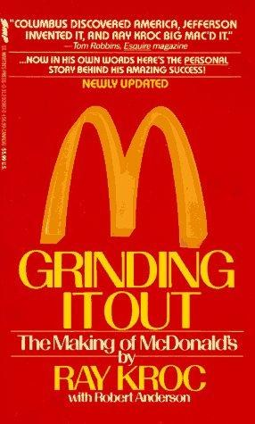

Library › Business & Startups
Grinding It Out: The Making of McDonald's — Summary & Key Lessons

He was a 52-year-old paper-cup salesman with diabetes and no restaurant experience. Then he saw a hamburger stand in San Bernardino.
📖 OPEN THE FULL INTERACTIVE BREAKDOWN →🌐 Read it in Hindi, Hinglish, Gujarati, Tamil & 22 more languages — free, with audio.
💡 The Big Idea
Kroc's account of building McDonald's is a manifesto for grinding: 30-plus years of selling paper cups and milkshake machines, then at 52 franchising a San Bernardino hamburger stand with obsessive standards (QSC&V: Quality, Service, Cleanliness and Value), a kitchen engineered like an assembly line, and franchisees selected as operators, not investors. Two structural discoveries drive the story: real estate (via the Franchise Realty Corporation, leasing land and subletting to franchisees) became the profit engine that banks respected and the franchise fund that made expansion self-financing; and the 1961 buyout of the brothers for $2.7 million, sealed with a handshake promise of royalties that was never formalized and never paid. The book is unapologetically Kroc: faith, persistence, systems and hustle, with the brothers' fate handled in pages that read very differently after our linked case study.
🧠 The 7 Key Lessons
Lesson 1: Persistence Is a Compounding Asset
Thirty Years of Paper Cups
Before McDonald's, Kroc spent decades in sales: paper cups (Lily-Tulip), then the Prince Castle multimixer, learning territories, hospitality, product quality and rejection resilience. His readiness at 52 was not luck; it was 30 years of compounding craft. The lesson: the skills you grind at now are the inventory of the opportunity you cannot yet see.
📖 Example: Kroc's milkshake-machine route took him into hundreds of restaurants nationwide; when he saw the San Bernardino stand ordering eight mixers, his market knowledge told him instantly what the brothers had and what it could become. Read the full example →
⚡ Do this: Write down the three skills your current grind is teaching you and the future opportunity class they unlock. Grind deliberately; inventory compounds.
Lesson 2: Franchise Operators, Not Franchise Investors
The Right Kind of Partner
Early franchise sellers sold to passive investors, producing absentee slumlords. Kroc insisted on owner-operators: people with skin in the game, working their own counter, whose income depended on the store's standards. Selection criteria beat contract terms; the franchisee is the product in a franchise business.
📖 Example: Kroc's first franchises went to working people who mortgaged everything to run one store obsessively, and their stores became the system's template and its proudest evangelists. Read the full example →
⚡ Do this: If you license or franchise anything, write your operator profile (time commitment, net worth in the game, personal presence) and reject capital that does not match it.
Lesson 3: Real Estate Was the Hidden Engine
Harry Sonneborn's Insight
Harry Sonneborn told Kroc the truth: we are not in the food business, we are in the real estate business. Franchise Realty Corporation leased or bought sites and subleased them to franchisees with rent tied to sales, creating predictable income, bank-grade collateral, and control (breech the standards, lose the site). The property engine financed growth without diluting Kroc's equity or the brothers' margin.
📖 Example: By the mid-1960s the real estate operation generated more profit than the franchise royalties themselves, giving McDonald's the balance sheet and discipline lever that made it unshakeable. Read the full example →
⚡ Do this: Ask what your version of the real-estate engine is: the physical or digital asset layer underneath your service that appreciates, collateralizes and enforces standards.
Lesson 4: Systems Are the Product: QSC&V and the Speedee Kitchen
Hamburger University
The McDonald brothers invented the Speedee assembly-line kitchen (grills at exact temperatures, condiment dispensers calibrated to the half-ounce) and Kroc systematized it into replicable scripture: operations manuals, Hamburger University (1961), QSC&V inspections. The genius was making excellence boring: any operator, anywhere, following the book, produced the same burger. Scale is a documentation problem before it is a marketing problem.
📖 Example: Operators trained at Hamburger University in the basement of a Des Plaines store before the company could even afford a real campus, and the same manual governed the thousandth store as the first. Read the full example →
⚡ Do this: Document your operation so a stranger produces your quality on day one. Where you resist documenting (the chef's intuition, the founder's touch) is where scale dies.
Lesson 5: The Handshake: Buyouts and Unpriced Promises
$2.7 Million and a Word
In 1961 Kroc bought the brothers out for $2.7 million (each took a million after taxes), sealed with a handshake agreement for a royalty on ongoing revenue; the promise was never written into the deal, and the brothers never collected the estimated hundreds of millions it would have been worth. The lesson cuts both ways: founders selling their company must convert verbal promises into contracts, and acquirers should notice what the deal's folklore does to a brand for the next century.
📖 Example: The brothers' one non-negotiable, keeping their original San Bernardino store, became a thorn: Kroc opened a McDonald's across the street (which he later admitted failed and closed, while theirs, stripped of the name, withered anyway). Read the full example →
⚡ Do this: Convert every verbal promise in a deal into a written term before signing, especially the ones that feel awkward to raise. Awkwardness now is wealth later.
Lesson 6: Copy the Best, Then Systematize Better
Borrowed Genius
Kroc did not invent fast food, the assembly-line kitchen, franchising or even the restaurant he franchised; his genius was obsessive improvement of what existed: standards, supply chains, training, brand consistency. The innovator's myth rewards invention; the operator's fortune rewards systematic excellence. Most category giants are systematizers of someone else's invention.
📖 Example: Kroc's innovation over the brothers' own model was ambition itself: the brothers were satisfied with one perfect store, while Kroc saw a thousand, and built the machinery (standards, real estate, training) to replicate it nationally. Read the full example →
⚡ Do this: Identify the best manual process in your market and ask what documentation, training and asset structure would make it identical everywhere. That gap is your company.
Lesson 7: Faith, Timing and the Rationalization of Ruthlessness
The Morally Complicated Read
The book is a first-person defense: Kroc frames the buyout as the brothers' failure to seize their own opportunity, and history largely agreed until retellings complicated his halo. The honest lesson: ambition and fairness are different axes, and winning both requires deliberate design (equity for early partners, written respect for originators), not post-hoc narrative. Read Kroc for the operating lessons; read the linked case study for the ethics ledger.
📖 Example: Decades later, the brothers' story (the milkshake machine salesman who took their burger stand global while they retired on $2.7 million) became the canonical cautionary tale of founders who build value they cannot or will not capture. Read the full example →
⚡ Do this: List everyone whose invention your venture stands on, and give each of them a written stake, credit or royalties now, while the paper is cheap and the gratitude is still sincere.
✅ 5-Step Action Plan
- Treat your current grind as inventory: name the skills and the opportunity class they unlock.
- Franchise or license only to operators with skin in the game and personal presence.
- Build the asset layer under your service that appreciates, collateralizes and enforces standards.
- Document your operation so a stranger ships your quality on day one.
- Convert every handshake promise into written terms before signing anything.
⚠️ When This Doesn't Work
This is Kroc's autobiography: self-flattering by nature, soft on the brothers' side of the buyout, and written before later retellings (books, film) restored nuance to their legacy. Some numbers and scenes are dramatized from memory. Read it alongside the linked case study for the full ledger, and treat its persistence gospel as true but incomplete.
💀 The Graveyard Proves It
🍔 The McDonald Brothers — A Handshake Worth $100M a Year. Burn: 1% of McDonald's — forever. Read the full case study →
💬 Best Quotes from Grinding It Out: The Making of McDonald's
- “I was 52 years old. I had diabetes and incipient arthritis. I had lost my gall bladder and most of my thyroid gland. But I was never stopped by any of them.”
- “Press on: nothing in the world can take the place of persistence.”
- “Luck is a dividend of sweat. The more you sweat, the luckier you get.”
- “The two most important requirements for major success are: first, being in the right place at the right time, and second, doing something about it.”
Interactive version: mark lessons as read, listen in your language, share quote cards.